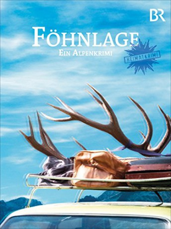

IMDB-Wertung: 6.0 / 10
IMDB-Wertung: 6.0 / 10  Metascore:
Metascore: 
Bei einem Konzert stürzt ein Mann von der Decke nimmt einen Besucher mit in den Tod.
 IMDB-Wertung: 6.0 / 10 Metascore:
Bei einem Konzert stürzt ein Mann von der Decke nimmt einen Besucher mit in den Tod.
Jahr: 2011
Dauer: 88 Minuten
FSK: 12
Land: Deutschland Studio: KNM Home EntertainmentTonspuren:
Untertitel:
Auflösung: 1080p (1920x1080) Größe: 6717 MB
Regisseur: Rainer Kaufmann
Drehbuch: Stefan Holtz, Florian Iwersen, Jörg Maurer
Soundtrack: Martin Probst
Darsteller:
 Martin Feifel als Kommissar Hubertus Jennerwein
Martin Feifel als Kommissar Hubertus Jennerwein Helmfried von Lüttichau als Xaver Haraßer
Helmfried von Lüttichau als Xaver Haraßer Georg Friedrich als Karl Swoboda
Georg Friedrich als Karl SwobodaDatei: X:\NEU\Föhnlage. Ein Alpenkrimi (2011, FSK12, 1920x1080).mkv seit 24.04.2019
 Es gibt insgesamt 187 Filme in der Gruppe 'NEU'
Es gibt insgesamt 187 Filme in der Gruppe 'NEU'